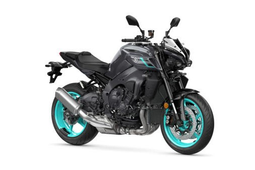

Yamaha MT-10
The Yamaha MT-10 is the most powerful and advanced Hyper Naked Yamaha has ever built. Armed with the crossplane engine derived from the R1, the MT-10 delivers brutal torque, razor-sharp handling, and a full suite of rider-focused electronics. It’s built to dominate the street with superbike power and naked aggression.
Specifications
- Engine displacement: 998 cc
- Power output: approx. 122 kW (165 hp)
- Engine type: 4-cylinder, crossplane crankshaft (CP4)
- Transmission: 6-speed with quickshifter & slipper clutch
- Electronics: 6-axis IMU with ride modes & slide control
Chassis & Brakes
- Front brake: Dual 320 mm discs with radial-mount calipers
- Rear brake: 220 mm disc
- Front suspension: Fully adjustable KYB USD fork
- Rear suspension: Adjustable monoshock
- Cornering ABS & traction control: Standard
Dimensions & Weight
- Seat height: 835 mm
- Wet weight: approx. 212 kg
- Fuel tank capacity: 17 liters
Key Features
- Crossplane R1 engine with refined street tuning
- 6-axis IMU and full electronic rider assist package
- Quickshifter up/down and cruise control
- Minimalist Hyper Naked design with full LED lighting
- Color TFT display and premium finish
Price: CHF 15,990.–
← Back to overview